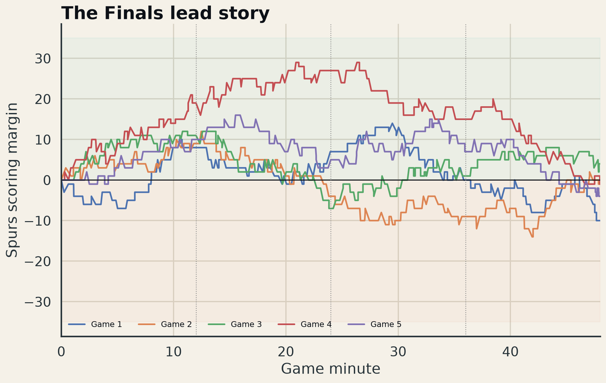

When did San Antonio’s Finals leads erode, how often did games reach the NBA clutch definition, and which possessions should be tagged for tactical review?
San Antonio held a lead of at least 29 points in the series, yet its average peak-to-final swing was 18.8 points. Across the five games there were 267 clutch-state plays—fourth quarter, five minutes or less, score within five—despite the 4–1 series result.
This is the most actionable offseason story in the portfolio: the gap was not simply “talent.” The play-by-play view isolates when control changed and creates a clean base for possession tagging, timeout sequencing, shot-quality review, and late-clock decision analysis.

Create a human-in-the-loop possession taxonomy for coverage, primary action, advantage creation, decision quality, and timeout/lineup context; test inter-rater agreement before modeling.